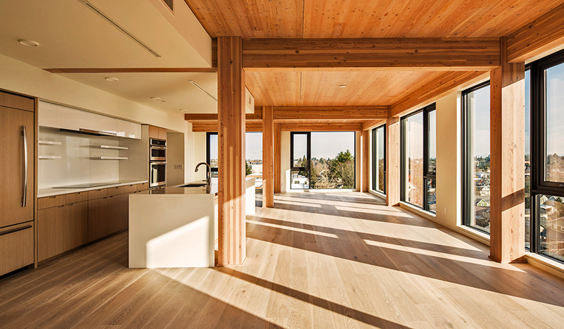

Mass Timber Construction
While steel and concrete construction release large amounts of carbon into the atmosphere, wood traps and stores carbon. Triple Bottom Line

Mass timber, unlike the wood used in stick-built residential construction, is more fire resistant than steel, with 30% the weight.
Four Categories of Mass Timber
1. Cross Laminated Timber (CLT) - Layers of timber (lamellas) glued together with grain alternating at 90 degree angles. SmartLam, with a location in Alabama, was the first commercial Cross Laminated Timber (CLT) manufacturer in the U.S. Their work includes the Tacoma Washington Train Station.
2. Glue Laminated Timber (Glulam) - Larger and longer beams and columns are produced by layering laminates with the grain aligned. Samples by Rubner Holzbau in Europe.
3. Nail Laminated Timber (NLT) at the Kendeda Living Building at Georgia Tech.
4. Dowel Laminated Timber (DLT) - No glue, no nails, easy reuse. Also called DowelLam and Dübelholz (“Dowelled Wood”).
"DLT panels are made from softwood lumber boards stacked like the boards of NLT, but friction-fit together with hardwood dowels instead of nails. The dowels hold each board side-by-side, forming a stiffer and stronger connection than the nails in NLT. Each board lamination in a DLT panel is finger-jointed, creating a stiffer and stronger panel than NLT as it eliminates the board splices and butt-joints which are characteristic of NLT. DLT panels may be processed using mill machinery, unlike NLT panels due to the nails. This creates a high tolerance panel which can also contain pre-integrated electrical conduit and other service runs." more
Timber and CLT components should be located on a suitable damp proof course membrane (DPC) at a minimum of 150mm above finished ground level unless a solution using an active drainage system is provided to reduce the distance.

In February of 2020 Macy's headquarters announced their move into Georgia's first mass timber office building - T3 West Midtown at Atlantic Station.